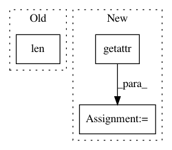

f84ceac8a9ccf0604d9f9f88cbf1f17f3d763688,onmt/Models.py,StackedLSTM,forward,#StackedLSTM#Any#Any#,57
Before Change
for i, layer in enumerate(self.layers):
h_1_i, c_1_i = layer(input, (h_0[i], c_0[i]))
input = h_1_i
if i != len(self.layers):
input = self.dropout(input)
h_1 += [h_1_i]
c_1 += [c_1_i]
After Change
h_0, c_0 = hidden
h_1, c_1 = [], []
for i in range(self.num_layers):
layer = getattr(self, "layer_%d" % i)
h_1_i, c_1_i = layer(input, (h_0[i], c_0[i]))
input = h_1_i
if i != self.num_layers:
input = self.dropout(input)
In pattern: SUPERPATTERN
Frequency: 4
Non-data size: 3
Instances
Project Name: OpenNMT/OpenNMT-py
Commit Name: f84ceac8a9ccf0604d9f9f88cbf1f17f3d763688
Time: 2017-02-23
Author: bryan.mccann.is@gmail.com
File Name: onmt/Models.py
Class Name: StackedLSTM
Method Name: forward
Project Name: keras-team/keras
Commit Name: 94dbc3042f5a85b399f5ce2859d4e8fbafd235b9
Time: 2017-07-06
Author: me@taehoonlee.com
File Name: tests/keras/backend/backend_test.py
Class Name:
Method Name: check_two_tensor_operation
Project Name: keras-team/keras
Commit Name: 94dbc3042f5a85b399f5ce2859d4e8fbafd235b9
Time: 2017-07-06
Author: me@taehoonlee.com
File Name: tests/keras/backend/backend_test.py
Class Name:
Method Name: check_single_tensor_operation
Project Name: OpenNMT/OpenNMT-py
Commit Name: 31b245193541b1c8cc75b8eea8232a1fb7552c75
Time: 2017-02-27
Author: bryan.mccann.is@gmail.com
File Name: onmt/Models.py
Class Name: StackedLSTM
Method Name: forward